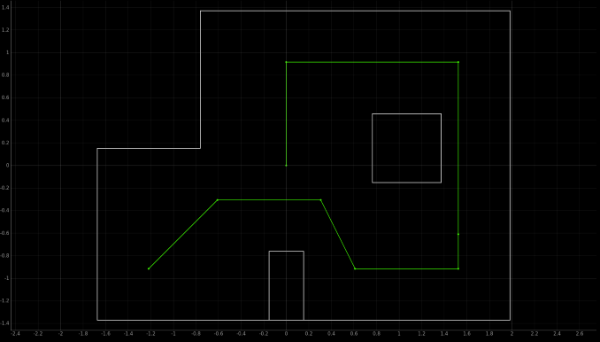

The purpose of this lab is to navigate through a set of waypoints within a maze. I used PID control throughout the maze to accomplish this.
Lab Sections
Part 1: Rotations
The path that needed to be followed can be seen below.

I split each section up into a rotation followed by a forward movement. The rotations are controlled through PID using the gyroscope the same way as in previous labs. First, I had to find the angle the robot must turn. I do this in the code below.
This code implements an equation to find the angle between two lines in radians, then converts that to degrees. command[0] is passed as the setpoint to the rotational PID controller. Before moving onto adding linear movement, I made sure all the rotations
worked well in sequence, this led me to an issue where 90 degrees turns cause a division by 0. I added simple conditionals to deal with this.